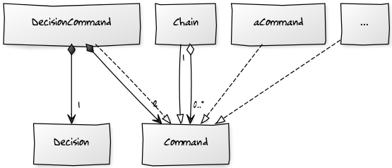
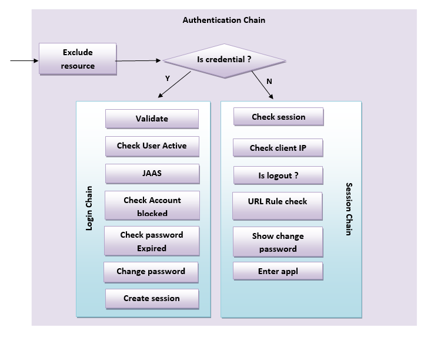
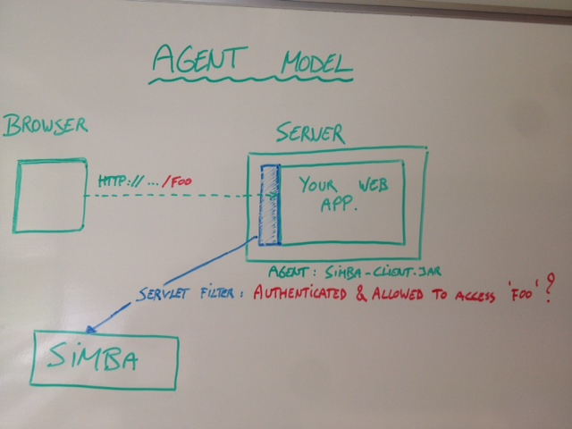

Reference documentation
Simba exposes two services for applications to use for authentication and authorization. These services are exposed using Apache Thrift™.
By using Thrift we can implement clients in different languages (.NET, php, ...) in an easy way. At this moment only the Java client is ready though.
Following code can be used to create a Thrift proxy:
THttpClient tHttpClient = new THttpClient(serviceURL);
TProtocol tProtocol = new TJSONProtocol(tHttpClient);Authentication
The Authentication service is responsible for checking a request for valid authentication data. The URL for this service is "/authenticationService"
Following snippet shows how the authentication service can be called using Java:
AuthenticationFilterService.Client authenticationClient =
new AuthenticationFilterService.Client(tProtocol);
ActionDescriptor actionDescriptor =
authenticationClient.processRequest(requestData, "chain-name");The authentication service just contains this single method to process a request, returning an ActionDescriptor.
Authorization
The authorization service is responsible for checking if a user is authorized to access a specific resource. The URL for this service is "/authorizationService"
Following snippet shows how the authorization service can be called using Java:
AuthorizationService.Client authorizationClient =
new AuthorizationService.Client(tProtocol);
PolicyDecision decision =
authorizationClient.isResourceRuleAllowed(userName, resource, action);
if (!decision.isAllowed()) {
throw new SecurityException("You are not allowed here !");
}The authorization service contains three methods:
- PolicyDecision isResourceRuleAllowed(username, resourceName, operation)
- Check if a user is allowed to perform a specified action on the given resource.
- PolicyDecision isURLRuleAllowed(username, url, method)
- Check if a user is allowed to perform a specified action on the given URL.
- PolicyDecision isUserInRole(username, roleName)
- Check if a user is included in the specified role.
The returned PolicyDecision contains a boolean value for the decision and a timestamp noting how long the decision is valid.
CommandChain API
New commands can easily be written to serve your custom needs. Simply extend the Command class and plug it into your chain in the correct place.Chain
A Chain represents a configured list of Commands that will be executed in order to perform processing on a specified for a specific request.
Each included Command will be executed in turn, until either one of them returns a 'FINISHED' state, an exception is thrown or the end of the chain has been reached.
Note that Chain itself is a Command. This allows for chains to be easily combined and processed in a hierarchical manner.
Command
A Command encapsulates a unit of processing work to be performed, whose purpose is to examine and/or modify the state of a request/response.
Decision
Check for certain conditions to be met.
DecisionCommand
The DecisionCommand is a Command implementation allowing to execute one of two Commands depending on a Decision. 
Provided commands
Authentication
CheckAccountBlockedCommand
Check if a user account is blocked. A redirect action containing a blocked message is created if it is blocked. This command should be positioned in the chain somewhere after the password check to not provide to much info to possible hackers.
CheckHttpRequestMethodCommand
CheckPasswordExpiredCommand
Check if the user's password is expired. If this is the case, an action is created to redirect the user to a change password page.
CheckUserActiveCommand
Check if the user exists in the datastore and if the user is not declared inactive. Creates a redirect action with credential errors if the user isn't active.
ExcludeResourceCommand
Allows specific resources to be excluded from authentication. This can be used to distinguish between public and private pages in your application. This command should be one of the first in the chain.
JaasLoginCommand
Performs the actual credential check. The command uses a configured JAAS flow to do this check. If the JAAS login fails, a redirect action containing a credential error is created.
ValidateRequestParametersCommand
Check if the request contains the correct attributes to perform a login. A redirect action containing credential errors is created if this is not the case.
Authorization
URLRuleCheckCommand
Check if the user is allowed to access the specific request URL. If this is not the case, a redirect action to an access denied page is created.
Session
ChangePasswordCommand
Detect request to change a user password. It will try to perform the password change and then create an action to redirect the user to a result page.
CheckClientIPCommand
Check if the current request for the user origins from the same IP-address as the on that created the session. If this is not the case, a redirect action for the login page is created.
CheckSessionCommand
Check if the user has a valid session. If there is no session, or if the session is expired, a redirect action for the login page is created.
CheckShowChangePasswordCommand
Creates an action to redirect the user to a change password page if the request is a request to display this page.
CreateCookieForNewSSOTokenCommand
In cases where a valid SSO token is provided, but there was not valid cookie sent by the user, this command creates the action to make the cookie.
CreateSessionCommand
Creates a session for a user if there is none available. It will create an action to create the SSO cookie and an action to redirect the user to the correct URL.
LogoutCommand
Handles a specific logout request. The command will destroy the user's session and create actions to delete the SSO cookie and redirect the user to the logout page.
EnterApplicationCommand
This command is normally the last in the chain. If a request gets through all other commands, then this command will simply create the action to allow entering the application.
Reference Chain

